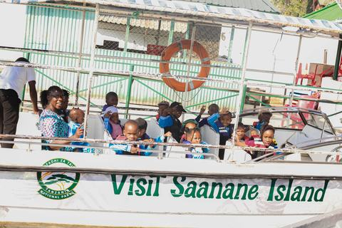
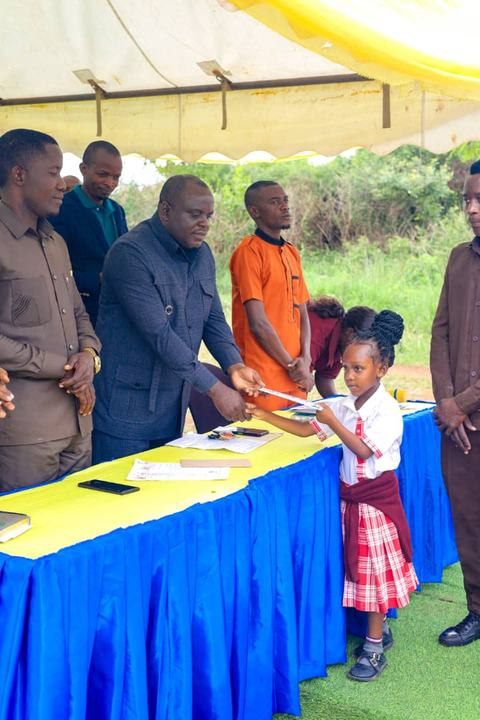
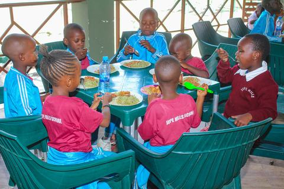
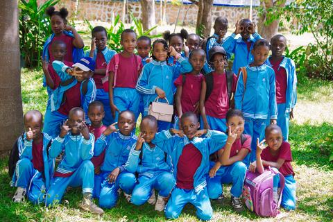
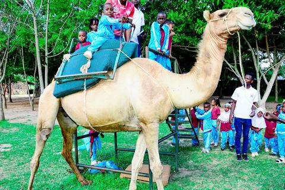
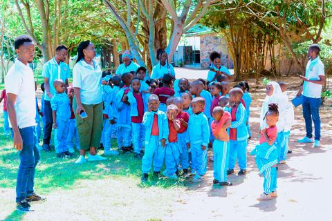
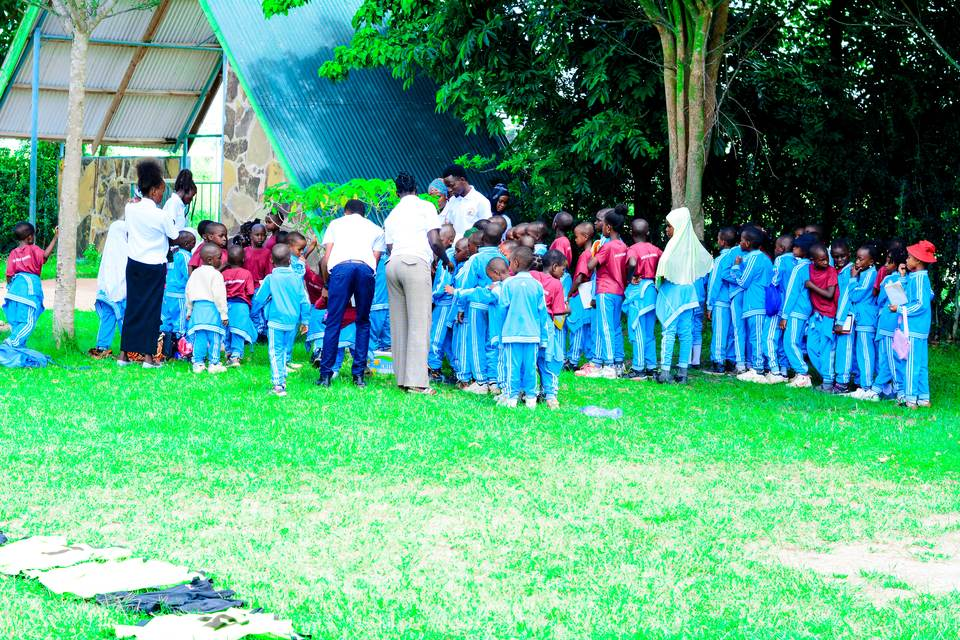

Learning beyond the classroom at Saanane Island
A supervised outing connected classroom curiosity with Mwanza’s natural environment.
Around the school
Follow classroom life, school visits, ceremonies and the dates families need to remember.
Latest stories

A supervised outing connected classroom curiosity with Mwanza’s natural environment.

Children were recognised for commitment, confidence and taking part in school life.

Classes returned to daily routines of reading, number work, play and shared meals.

Pupils brought energy and personality to a set of informal class portraits.

Supervised activities gave pupils new things to see, discuss and remember.

Families and staff began the year with refreshed routines and clear learning goals.
Calendar
| Date | Event | Who should attend |
|---|---|---|
| Term opens | All pupils | |
| Parent–teacher afternoon | Parents and guardians | |
| Sports and play day | Pupils and families | |
| Learning exhibition | School community | |
| Term closing activities | All pupils |
Event photographs
See more photographs from trips, ceremonies, everyday learning and outdoor activities.
Open the gallery
Stay informed